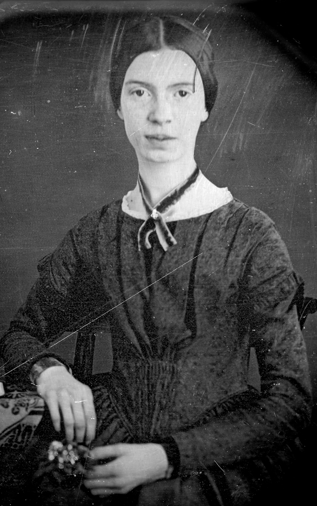
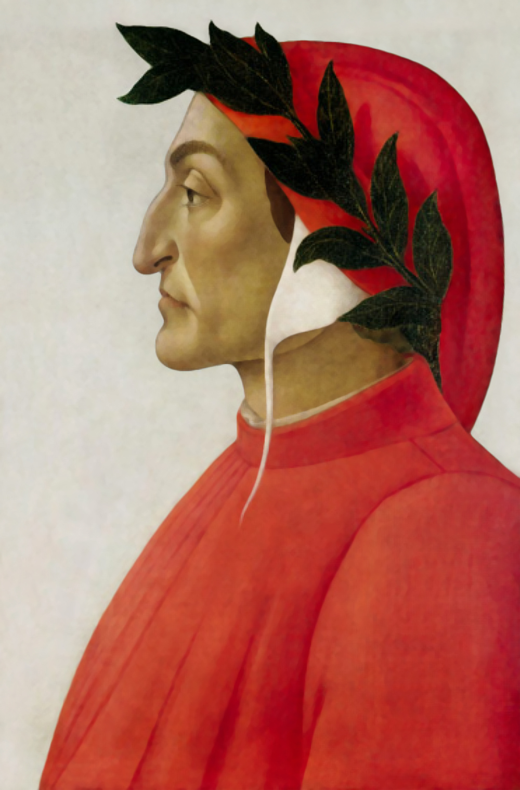

Charles Dickens (1812-1870)
Charles Dickens was an extraordinary man. He is best known as a novelist but he
was very much more than that. He was as prominent in his other pursuits but they
were not areas of life where we can still see him today. We see him as the author
of such classics as Oliver Twist, David Copperfield, Great Expectations, A Tale of
Two Cities, Bleak House and many others. All of his novels are English classics.
Dickens had an almost unbelievable level of energy. In addition to writing all those lengthy books in long-hand, he had time to pursue what would have been full-time careers for most people in acting, literary editing social campaigning and philanthropic administration. He was also the father of a large family, as well as being involved in a love affair that lasted many years.
Dickens had an almost unbelievable level of energy. In addition to writing all those lengthy books in long-hand, he had time to pursue what would have been full-time careers for most people in acting, literary editing social campaigning and philanthropic administration. He was also the father of a large family, as well as being involved in a love affair that lasted many years.
Emily Dickinson (1830-1886)
Unknown as a poet during her lifetime, Emily Dickinson is now regarded by many as one
of the most powerful voices of American culture. Her poetry has inspired many other
writers, including the Brontes. In 1994 the critic, Harold Bloom, listed her among the
twenty-six central writers of Western civilisation.
After she died her sister found the almost two thousand poems the poet had written. As her poems entered the public consciousness her reception concentrated on her eccentric, reclusive nature, but since then she has become acknowledged as an original and powerful poet. It is fortunate that her sister gained access to the poems as without them American culture would have been very much poorer.

After she died her sister found the almost two thousand poems the poet had written. As her poems entered the public consciousness her reception concentrated on her eccentric, reclusive nature, but since then she has become acknowledged as an original and powerful poet. It is fortunate that her sister gained access to the poems as without them American culture would have been very much poorer.

Dante (Durante degli Alighieri) (1265-1321)
Dante was an Italian poet. His most famous and acclaimed poem is the long narrative, The Divine Comedy,
the story of the narrator’s journey through hell and purgatory to paradise. It impacts on modern life
in that its picture of what hell is like, with its ice and sulphurous fire, where sinners are tortured
in the most horrific way, is the image Western culture has of hell. It is the picture of eternal torture
that was painted by the Catholic Church for centuries.
Similarly, his purgatory and paradise have become the fixed image of what those places are like and, in fact, have until recently been taught by some religions as though they were real rather than fictional places. In some Christian sects they are still taught as the places invented by Dante.
Similarly, his purgatory and paradise have become the fixed image of what those places are like and, in fact, have until recently been taught by some religions as though they were real rather than fictional places. In some Christian sects they are still taught as the places invented by Dante.